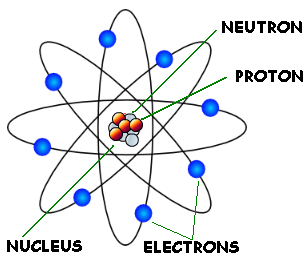

| ATOM | |
| PROFILE ARTIKEL LOGIN | |
|  |
Atom adalah suatu satuan dasar materi, yang terdiri atas inti atom serta awan elektron bermuatan negatif yang mengelilinginya. Inti atom terdiri atas proton yang bermuatan positif, dan neutron yang bermuatan netral (kecuali pada inti atom Hidrogen-1, yang tidak memiliki neutron). Elektron-elektron pada sebuah atom terikat pada inti atom oleh gaya elektromagnetik. Sekumpulan atom demikian pula dapat berikatan satu sama lainnya, dan membentuk sebuah molekul. Atom yang mengandung jumlah proton dan elektron yang sama bersifat netral, sedangkan yang mengandung jumlah proton dan elektron yang berbeda bersifat positif atau negatif dan disebut sebagai ion. Atom dikelompokkan berdasarkan jumlah proton dan neutron yang terdapat pada inti atom tersebut. Jumlah proton pada atom menentukan unsur kimia atom tersebut, dan jumlah neutron menentukan isotop unsur tersebut. Istilah atom berasal dari Bahasa Yunani (ἄτομος/átomos, α-τεμνω), yang berarti tidak dapat dipotong ataupun sesuatu yang tidak dapat dibagi-bagi lagi. Konsep atom sebagai komponen yang tak dapat dibagi-bagi lagi pertama kali diajukan oleh para filsuf India dan Yunani. Pada abad ke-17 dan ke-18, para kimiawan meletakkan dasar-dasar pemikiran ini dengan menunjukkan bahwa zat-zat tertentu tidak dapat dibagi-bagi lebih jauh lagi menggunakan metode-metode kimia. Selama akhir abad ke-19 dan awal abad ke-20, para fisikawan berhasil menemukan struktur dan komponen-komponen subatom di dalam atom, membuktikan bahwa 'atom' tidaklah tak dapat dibagi-bagi lagi. Prinsip-prinsip mekanika kuantum yang digunakan para fisikawan kemudian berhasil memodelkan atom. Dalam pengamatan sehari-hari, secara relatif atom dianggap sebuah objek yang sangat kecil yang memiliki massa yang secara proporsional kecil pula. Atom hanya dapat dipantau dengan menggunakan peralatan khusus seperti mikroskop gaya atom. Lebih dari 99,9% massa atom berpusat pada inti atom,[catatan 1] dengan proton dan neutron yang bermassa hampir sama. Setiap unsur paling tidak memiliki satu isotop dengan inti yang tidak stabil, yang dapat mengalami peluruhan radioaktif. Hal ini dapat mengakibatkan transmutasi, yang mengubah jumlah proton dan neutron pada inti.[2] Elektron yang terikat pada atom mengandung sejumlah aras energi, ataupun orbital, yang stabil dan dapat mengalami transisi di antara aras tersebut dengan menyerap ataupun memancarkan foton yang sesuai dengan perbedaan energi antara aras. Elektron pada atom menentukan sifat-sifat kimiawi sebuah unsur, dan memengaruhi sifat-sifat magnetis atom tersebut. |
| copyright 2023 | Fauzi Ridwan Fadilah | |